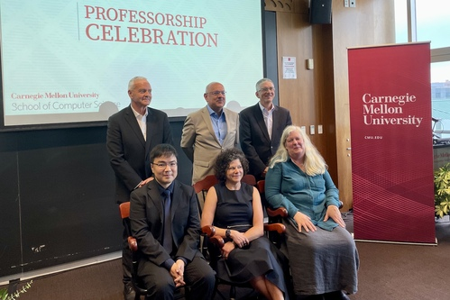

马坚，现任卡内基梅隆大学 (Carnegie Mellon University) 计算机科学学院Ray and Stephanie Lane计算生物讲席教授。他曾于1996-2000年在复旦大学就读本科，于2000年毕业于复旦大学计算机科学技术学院软件专业，并于2003年获得硕士学位 (导师为张亮教授)。2003年赴美留学，2006年从美国宾夕法尼亚州立大学获得计算机科学博士学位 (导师为计算生物学先驱 Webb Miller)，后在加州大学圣克鲁斯分校师从美国科学院院士 David Haussler 进行博士后研究。2009年至2015年在伊利诺伊大学香槟分校 (University of Illinois at Urbana-Champaign) 任助理教授和副教授（并获终身教职），于2016年1月加入卡内基梅隆大学计算机科学学院。马坚曾获得过多个奖项，其中包括2011年美国国家科学基金会CAREER 奖和2020年古根海姆奖 (Guggenheim Fellowship; 计算机科学领域)，并在2022年被选为美国医学与生物工程院 (American Institute for Medical and Biological Engineering) 会士。
母校在对马坚教授近年来的成就表示祝贺的同时，也希望马教授能给母校的师生做些深度交流。马教授一直对母校充满着感情，由此我们策划了本次文字访谈，希冀给复旦学子们更多的启迪和帮助。
访谈问答
1、在复旦大学的求学经历对您各个方面产生了哪些影响呢？有遇到过什么让您受益匪浅的人或事吗？
马坚：我在复旦的学习对我产生了深远的影响，无论是对世界的认识和对之后研究兴趣的培养。大学期间很多老师的亲切和敬业现在还印象深刻，很多大学同学都成了一直以来的好朋友。相比国内其他院校，我觉得复旦的特殊之处在于它的包容性/前瞻性，和对学生个人志趣的全力支持，这既体现在制度文化层面上，也体现在教师对学生的培养上。比如，我本科是计算机专业的，但在大四时候遇到了从事计算生物研究的钟扬教授。钟老师2000年加入复旦生科院，和计算机系的张亮教授开始一些合作，我也有机会参与到一些他们关于结合计算机和基因组研究的讨论。钟老师那时候还邀请我担任他在生科院新开设的生物信息学课程的助教。和钟老师的交流让我对计算机和生物的跨学科研究产生了浓厚的兴趣。后来我申请美国学校的时候，就专门申请了计算生物这个方向，并在这个方向上从事了近二十年的研究。二十多年前这个方向还很小众，是当时钟老师给了我启迪引我入门。他开阔的视野和前瞻性的指导也让我知道交叉学科的重要性。钟老师2017年意外去世我非常难过。如果当年我没有遇到钟老师，我的职业轨迹不会是现在这个样子。

摄于1996年正式进入复旦大学之前的夏天
马坚和大学室友在复旦期间的合影
2、您为什么选择了计算生物学作为您的研究方向？
马坚：这和我自己的兴趣、在复旦的经历、和来美国之后的学习密不可分。在复旦的熏陶让我意识到科学研究的乐趣在于探索未知的领域。我的博士导师Webb Miller和博士后的导师David Haussler都是计算机领域出身的计算生物学先驱，他们俩分别在用组合优化研究基因组序列比对方法和工具，以及用机器学习方法研究基因组等方向都做出了开创性的工作。我在他们的指导下，在比较基因组相关的一些算法和应用问题上做了大量研究。2009年我在伊利诺伊大学香槟分校建立自己的实验室后，开始探索一些自己感兴趣的问题。尤其是过去十几年高通量生物技术的迅猛发展，给计算生物发展带来了前所未有的巨大契机。近年来机器学习领域的方法不断创新也提供了新的视角和机会。在我2016年来到CMU计算机学院之后，机器学习和计算生物的有效结合成为我们近期研究的重点。这当中有很多富有挑战并有意义的问题需要解决。
3、您现在的科研方向和兴趣点是什么？可否介绍下最近的科研成果和动态？
马坚：我的兴趣是用计算机算法去探索生物学的奥秘。计算机科学和生物的交叉蕴藏着巨大潜能，产生的新发现会对人类健康和医学的发展有重要的意义。我的实验室近几年对基因组和细胞的结构和功能相关的计算方法做了不少研究。譬如染色体在细胞核中有独特的空间折叠结构并且和蛋白质、RNA都有互相作用。同时，单细胞的组成在我们体内不同组织中（譬如人脑）都有独特的空间结构。这些分子和细胞的空间结构对我们的健康都有着至关重要的作用，但是我们其实对他们知之甚少。我的实验室最近几年通过研究一些最新的机器学习方法，譬如深度表征学习和概率模型，对细胞核结构和单细胞在组织内的空间结构进行更有效的建模和预测。最终的目的是对细胞和组织的空间结构提供更真实更全面的建模，并预测这些结构的变化可能会产生的对细胞功能和人体健康的影响。另外，我们对生物问题给机器学习方法本身带来的挑战也很关注，譬如如何提高方法的可解释性，如何解决生物学数据所独有的高维度缺乏标准等难题，如何真正利用机器学习方法去自动指导实验。
4、您在计算机科学与生物学交叉领域的研究硕果累累，请问您对学科的交叉有什么整体的看法？
马坚：在我看来，不同学科之间的交叉融合是大学教育和科学研究的未来，而复旦在这一点上有独特的优势。正如复旦金力校长在最近的一篇讲话中提到的，学科融合和跨学科基础研究及应用是非常重要的。现在回想起来，我在复旦的学习经历其实是跨学科融合很好的例子；而复旦独特的文化，其实早在二十多年前就或多或少地促成了这一点。从国际上看，越来越多的重要科学突破都是跨学科研究的产物。从我比较熟悉的生物医学领域来说，其和化学的交叉产生了很多基础性的创新发现，和物理和材料的交叉对生物工程技术提供了巨大推动，而和计算机和统计学的结合形成了生物医学大数据革新。传统学科的发展需要交叉学科带来新活力和新视野，这也是国际上的领先大学都在不断探索的。人工智能、生物医学、材料、能源、以及人文学科，我觉得这些今后都会有大量学科融合的机会。

2022年8月29日，CMU举行了马坚的讲席教授庆祝活动
5、在您的学习生涯中，是哪些因素促使您选择踏上科研之路？或者说您踏上科研之路的初衷是什么呢？
马坚：和很多走上科研道路的人一样，我的初衷是想要做一些前人没有做过的事情。我个人看来，其实真正有意义、有深远影响的科学研究并不是看谁做得快，或是比谁资源多，而是看谁更专注、更勇于尝试前人没有做过的事情。这方面我的博士导师和博士后导师都给了我榜样的力量。我现在也这样要求我自己的博士生们。
6、您在科研过程中遇到了哪些困难又是如何克服的呢？
马坚：科研过程中遇到的困难可能是大家都会遇到的问题： 课题进展得不顺利，文章被拒稿，申请的项目基金被拒绝。每次遇到这样的问题，调整好心态，调整一下计划，都会有继续进展的办法。我要感谢我实验室的学生们，他们是推动科学研究前进的动力，他们的创造力、韧劲和不懈的努力把我们各种稀奇古怪的想法最终变成了独特的研究成果。
7、根据您自己的求学生涯和从教经历，在您看来国内外计算机科学的主要科研模式有哪些区别？
马坚：我觉得国内的计算机学科过去几年发展迅猛，很多学校在诸多方向上的实力都是国际上最活跃的水平，可能需要关注的是如何加速计算机学科和其他学科的交叉融合并产生深远的影响力。美国顶尖的计算机院校其实也处于相同的境地。以我工作的CMU计算机学院为例，其能够几十年始终保持计算机科学世界上最顶尖的地位，归根结底是学校一直在寻找新的发展方向、并有魄力走在别人前面。CMU的计算机学院有七个不同的系，专注于不同的计算机科学的发展和融合方向，从早期的机器人、软件工程，到后来的机器学习、人机交互、计算生物等。几乎每个系的建立都是为了远早于其他学校大力开展一个重要方向的研究，率先重新定义计算机学科的范畴。正是这些前瞻性的决定一直引领着计算机科学的未来发展方向。
8、对于正在从事科研的莘莘学子尤其是研究生们，或者很多都感到前进的道路困难重重，您有什么建议可以分享给大家吗？
马坚：我对新加入我实验室的博士生都会说，在博士期间你要花五年的时间，只做一件事情：努力成为某个具体问题研究上做得最好的之一；而这五年是你二十多岁期间最宝贵的时间，所以一定要找到自己最感兴趣、最让你激动的方向，做一些独特的事情，去解决大的问题。
9、您认为在中国，对于未来想投身计算机科学科研工作的学子们，哪些能力是需要重点培养的呢？
马坚：中国的快速发展提供了很多独特的、具有重要意义的研究方向，尤其是对于计算机科学而言。我觉得学科融合的能力和广阔的视野很重要：不仅仅在自己的研究领域打好基础有专长，也要能够多了解其他的相关方向，正如复旦校训里说的“博学而笃志”。譬如打开一期Nature或者Science这样的综合性杂志，是否有足够的兴趣并能大致看懂不少其他领域的文章。这个阅读文献的习惯可能从事计算机科学研究的同学很少会有，不妨尝试训练一下这个能力。